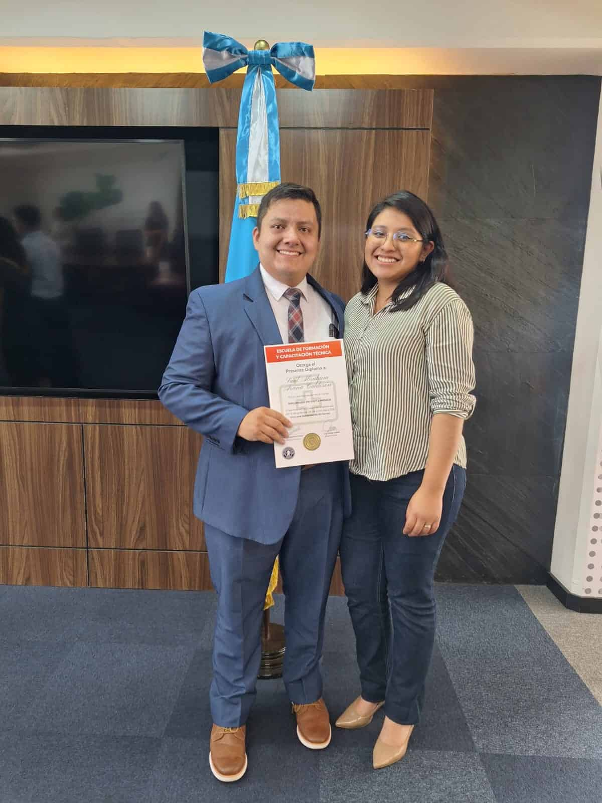

Saúl Abraham Arana Calderón
About Me
Hi! I'm Saúl Arana from Quetzaltenango, Guatemala — a tech enthusiast passionate about programming, cybersecurity, and Linux customization. I love exploring how technology can make life smarter and more creative, from setting up my own media servers to developing personal finance apps. For me, tech isn’t just a career — it’s a way to build, learn, and have fun.
Quetzaltenango, Guatemala
Quetzaltenango is a city located in the western mountainous region of Guatemala. It is set against a backdrop of several volcanoes, including the imposing Santa María volcano with its active lava dome, Santiaguito. The Holy Spirit Cathedral dominates Central America Park and has a colonial Baroque façade and a 20th-century interior. The city is known for its neoclassical buildings, including the House of Culture and the restored Municipal Theater.
